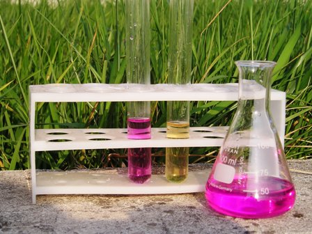

La sintesi dei ferrati alcalini, nei quali il ferro esibisce l'eccezionale valenza 6 è molto complessa e laboriosa se si vuol ottenere il sale allo stato puro, tanto che leggendola in letteratura passa completamente la voglia di tentarla, pur essendo il prodotto estremamente interessante sia per l'esoticità della valenza sia per le proprietà ossidanti del sale.
Accontentandomi di avere una soluzione di ferrato e invogliato dal solito video Youtube, ho replicato l'esperienza con qualche variante, riuscendo finalmente a vedere di persona il bel colore fucsia di questo strano ione.
In passato avevo tentato con poco successo di produrlo col vecchio metodo polvere di ferro/nitrato di potassio, mentre questa volta è andata meglio, come si può vedere dalla foto conclusiva.

Si tratta di ossidare per via umida in ambiente fortemente alcalino un sale di ferro con una miscela di ipoclorito/persolfato di sodio.
L'esperienza è facilissima, io l'ho condotta in questo modo:
- porre in un becker 5 g di FeSO4.7H2O sciolto in 50 ml di acqua
- aggiungere 10 ml di NaOH al 20% (precipita l'idrossido ferroso verde scuro colloidale)
- mescolare e aggiungere 6 g di Na2S2O8 (comincia l'ossidazione a idrossido ferrico rosso mattone)
- aggiungere agitando 50 ml di NaClO al 6% (si sviluppa cloro e continua l'ossidazione)
- riscaldare all'ebollizione per 5 minuti
- lasciar raffreddare, decantare e filtrare il liquido rosa formatosi, scartando il solido
Il liquido rosa è una soluzione, purtroppo alquanto diluita, di ferrato sodico Na2FeO4 insieme a cloruro e solfato, secondo le reazioni:
2 Fe(OH)3 + 3 NaClO + 4 NaOH --> Na2FeO4 + 3 NaCl + 5 H2O
2 Fe(OH)3 + 3 Na2S2O8 + 10 NaOH --> 2 Na2FeO4 + 6 Na2SO4 + 8 H2O
Il colore è quasi identico a quello di una soluzione diluita di permanganato KMnO4, ma con una tonalità più brillante e leggermente meno violacea.
Per confermare la presenza di ferrato ho aggiunto ad una porzione di liquido qualche goccia di ammoniaca, la quale viene ossidata ad azoto, decolorando la soluzione, secondo la reazione:
2 Na2FeO4 + 2 NH4OH --> 2 Fe(OH)3 + 4 NaOH + N2
Le foto mostrano l'inizio della preparazione, con il becker contenente l'intruglio con il ferro ancora bi- e tri-valente e l'esito finale, con la beuta dell'insolito color rosa Fe6+ e le provette rispettivamente senza e con aggiunta di ammoniaca.

L'esperienza è puramente dimostrativa e nemmeno vagamente seguibile per la preparazione di ferrato alcalino "solido" perche la resa è troppo bassa ed il prodotto non separabile dagli altri sali solubili; si conferma tuttavia molto interessante dal punto di vista sperimentale.
1 commenti